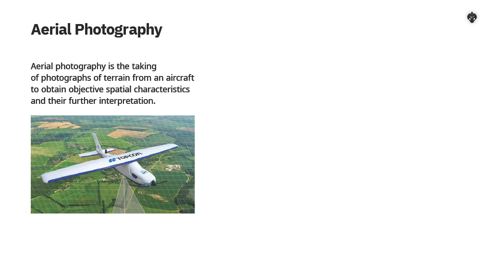
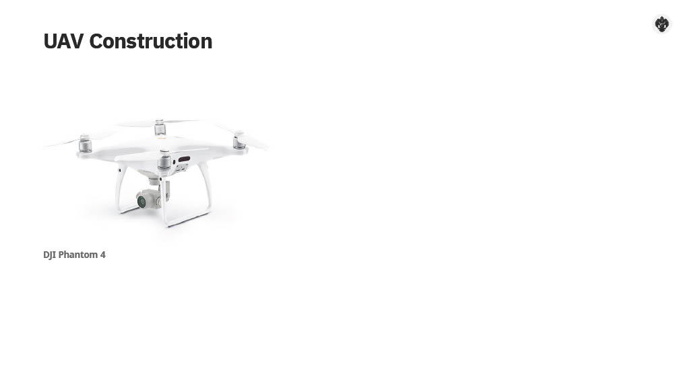
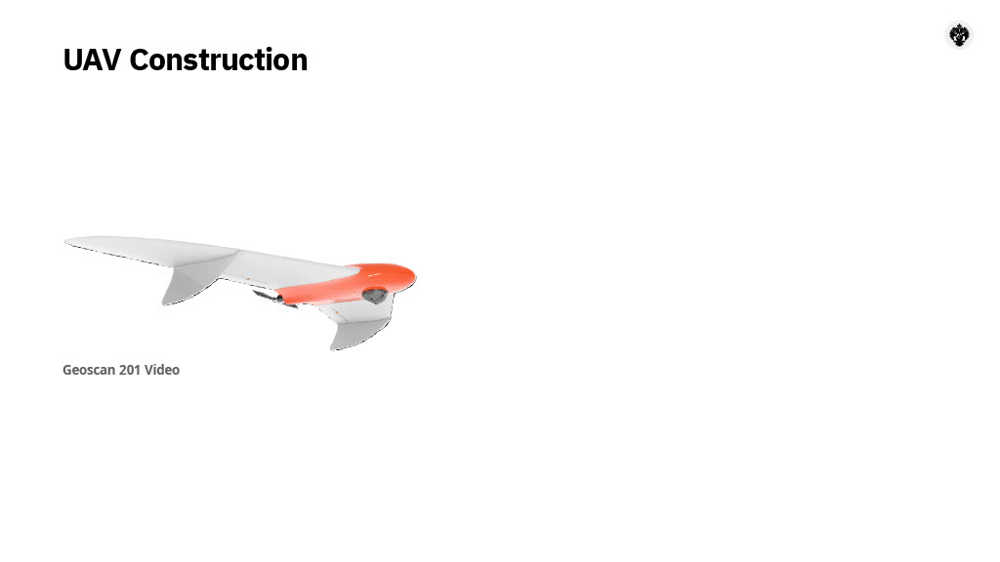

Aerial Photography with UAVs
From history and UAV types to geodesy, GNSS, and mission planning
This course is based on the course of Artem Mazurok (St Petersburg University). It was made available again after being removed from coursera.org. Here you will find structured material on aerial photography using unmanned aerial vehicles—with clear explanations and visuals.
What is Aerial Photography?
Aerial photography is photographing the Earth’s surface from an aircraft—here, an unmanned one—to obtain objective spatial characteristics and interpret them.
Requirements include a defined overlap between images, accuracy for photo centers, and other technical and procedural conditions that we will cover in the following modules.

Boston, as the Eagle and the Wild Goose See It, 1860. Early aerial photography.
Brief history
- 1851: wet colloidal process replaces daguerreotype
- 1858: first air photo from a balloon (Nadar, Paris), not preserved
- 1860: first preserved aerial photo (Boston)
- 1910: International Photogrammetric Society created
- 2000: first digital aerial camera (Leica DMC I)
- Today: UAVs account for ~half of aerial photography work
UAVs: Types, Construction & Payload
Unmanned Aerial Vehicles are defined as aircraft flying without a pilot on board, controlled automatically and/or by an operator from the ground.
Classification by weight & type
Two broad categories: lighter than air (airships, balloons) and heavier than air. In Russia: <250 g (no registration), 250 g–30 kg (registration), >30 kg (registration + airworthiness certificate).
- Fixed-wing — airplane-like, long endurance, needs take-off/landing space
- Multirotor — quad/hex/octocopter; hover, small landing area; shorter flight time
- Hybrid (VTOL) — vertical take-off + fixed-wing cruise; more complex, higher cost
Construction
Every UAV has structural parts (wings, propellers, body) and on-board electronics: autopilot, navigation, payload. The autopilot estimates position and motion, controls propulsion, and communicates with the ground station. Navigation combines an IMU (gyroscopes, accelerometers, magnetometers) with a satellite receiver (GNSS).
Payload types
Flight payload: equipment for autonomy and safety (e.g. pitot tube, ultrasonic/infrared rangefinders). Mounted payload: sensors for the mission—cameras, lidars, etc.
By sensing method:
- Passive — RGB, NIR, thermal, hyperspectral cameras; magnetometers
- Active — LiDAR (light detection and ranging), radar
RGB cameras are the most common (orthomosaics, 3D models). NIR supports vegetation indices. LiDAR can “see” under foliage via multiple returns per pulse; it is more expensive and heavier than photogrammetry.


Left: DJI Phantom 4 (quadcopter). Right: Geoscan-201 (fixed-wing). Choice depends on area size, terrain, and required endurance.
Coordinate Systems & Geodetic Control
Survey results must be tied to a coordinate system and vertical datum so that orthomosaics, DEMs, and plans match existing maps and documentation.
Coordinate systems
Global: geocentric (e.g. WGS-84, PZ-90), origin at Earth’s mass center; Z to pole, X to equator/prime meridian. Reference: national systems on a reference ellipsoid (e.g. GSK-2011 in Russia, replacing SK-42/SK-95). Local: for a region (e.g. a subject of the federation), with defined transformation keys to the state system.
Planar coordinates often use Gauss–Krüger (Russia) or UTM (Universal Transverse Mercator). Heights: normal heights from quasigeoid (e.g. Baltic 1977 in Russia) or geodetic heights from ellipsoid.
GNSS in brief
Global Navigation Satellite Systems (GPS, GLONASS, Galileo, BeiDou) provide position by measuring distances to satellites. The control segment maintains orbits and clocks; the user segment includes consumer devices and geodetic receivers (single- or dual-frequency, used for surveying and UAV positioning).
Absolute positioning (one receiver): ~several metres. Differential/relative (base + rover): centimetre-level. Methods include code and carrier-phase measurements; phase requires fixing integer ambiguities.
RTK — real-time kinematic; base sends corrections to rover live. PPK — post-processing kinematic; corrections applied after flight. PPP — precise point positioning; single receiver + precise orbits/clocks, no base.
Geodetic control for aerial survey
Two main approaches:
Ground control points (GCPs)
Mark 3+ identifiable points, measure their coordinates (e.g. by GNSS), use them in photogrammetric adjustment. Pros: lower cost, simple. Cons: slower, not ideal for large or inaccessible areas.
Onboard geodetic GNSS + base / PPP
UAV carries a survey-grade receiver; use a base station (e.g. <30 km) for differential (PPK/RTK) or PPP corrections. Pros: high accuracy, less field time, suitable for large areas. Cons: higher equipment cost; base or correction service needed (unless using PPP).
For plan conformity and accuracy control, coordinates/heights from the orthomosaic or DEM are compared with independent geodetic measurements at check points; standard errors are evaluated against the required scale.
Requirements, Reconnaissance & Ground Control Station
The technical task defines scale, overlap, resolution, accuracy, equipment, and deadlines. Preparatory work includes permissions, geodetic support, and flight mission design.
Aerial photography requirements
Key parameters: scale, overlap (along and across track), ground sampling distance (GSD), horizontal and vertical accuracy. For a 1:2000 topographic plan, orthomosaic resolution is typically at least ~10 cm/pixel (often 8–9 cm for margin). Flight altitude is set from GSD and camera parameters. Terrain (e.g. SRTM, ASTER DEM) is used in mission planning to keep constant GSD and avoid obstacles.
Preparatory steps (example: small city 30 km²)
- Obtain permissions (airspace, FSB, administration, etc.) and check restricted zones (e.g. fpln.ru, KML in Google Earth).
- Request SGN (state geodetic network) point coordinates/heights from Rosreestr; check for permanent base stations.
- Choose suitable days (no low clouds, no precipitation, sun height ≥20°, no snow if needed).
- Build flight mission: area, GSD, overlap, take-off/landing; use DEM for terrain-following if needed.
- Place or select GCPs (e.g. road markings in cities); if using onboard GNSS, GCPs can serve as check points only.
Ground control station (GCS)
The GCS is the hardware–software complex for controlling the UAV, receiving telemetry, and viewing video. It can be ultralight (smartphone/tablet + remote, e.g. DJI), light (laptop + radio, industrial software like Geoscan Planner, UgCS), or stationary (military-style cabins).
Main functions: create flight mission (routes, altitude, overlap, camera trigger), control during flight (upload mission, monitor status, change task or land if needed), and assess survey quality (photo coverage, GNSS availability) before leaving the field.
GNSS Data Processing
Surveying and UAV missions often rely on post-processing of GNSS data: static (networks, GCPs) and kinematic (trajectory, photo positions).
Static processing
Used for geodetic networks and GCP coordinate determination. Data are stored in exchange formats (e.g. RINEX). Processing steps: import, set antenna height and model, cutoff angle and SNR mask, then baseline computation (double-difference phase, ambiguity resolution). Multiple baselines are combined in a network adjustment. Software: Trimble Business Center, Leica Geo Office, Topcon Magnet Tools, RTKLib (free).
Kinematic processing
Used for moving receivers: trajectory and event positions (e.g. camera trigger times). Requires higher recording rate (e.g. 5–10 Hz). Rover is initialised (static or on-the-fly); base and rover data must overlap in time without gaps. Processing computes the baseline at each epoch and often applies a Kalman filter for smooth trajectory. Forward and backward runs can be combined. Output: trajectory and event coordinates (e.g. for photogrammetry). Software: Topcon Magnet Office, Javad Justin, Novatel GrafNav.
RTK and PPP
Real-time kinematic (RTK): base sends corrections to the rover in real time (radio or cellular); centimetre accuracy within ~30 km of the base. Post-processing kinematic (PPK): same idea, corrections applied after the flight. Precise Point Positioning (PPP): single receiver with precise orbits and clock corrections (e.g. from IGS); no base station, but convergence takes time and final products may be delayed (e.g. 2 weeks for final ephemeris).
Key takeaways
- Aerial photography from UAVs requires defined overlap, GSD, and geodetic control to produce orthomosaics and DEMs that match specifications.
- UAV choice: fixed-wing for large areas and endurance; multirotor for hover and 3D modelling; hybrid for VTOL + range.
- Payload: RGB/NIR/thermal and LiDAR are complementary; photogrammetry is cheaper, LiDAR excels under vegetation.
- Coordinates & heights: bind results to the required system (state or local) and vertical datum (e.g. Baltic 77) and check accuracy with independent points.
- Geodetic control: GCPs for small or low-budget projects; onboard geodetic GNSS + base or PPP for large or high-accuracy work.
- Mission planning: permissions, SGN points, DEM-based routes, GSD and overlap; GCS for mission creation, flight control, and quality check.
- GNSS processing: static for networks and GCPs; kinematic/PPK for UAV trajectory and photo positions; RTK for real-time; PPP when no base is available.